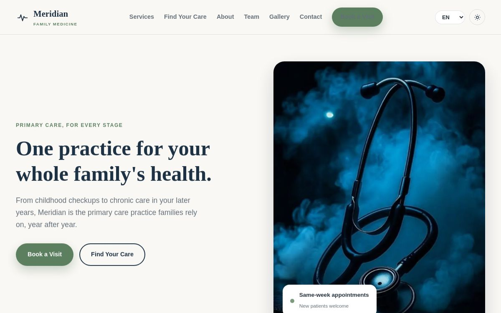
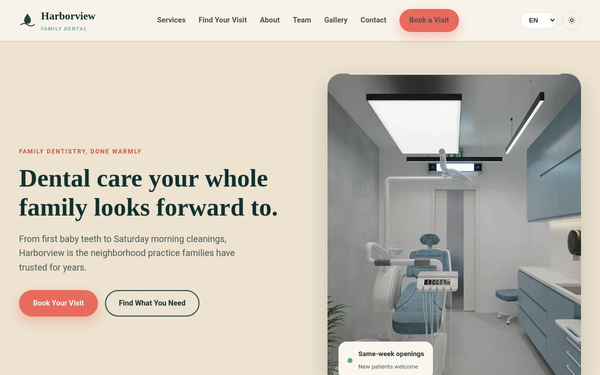
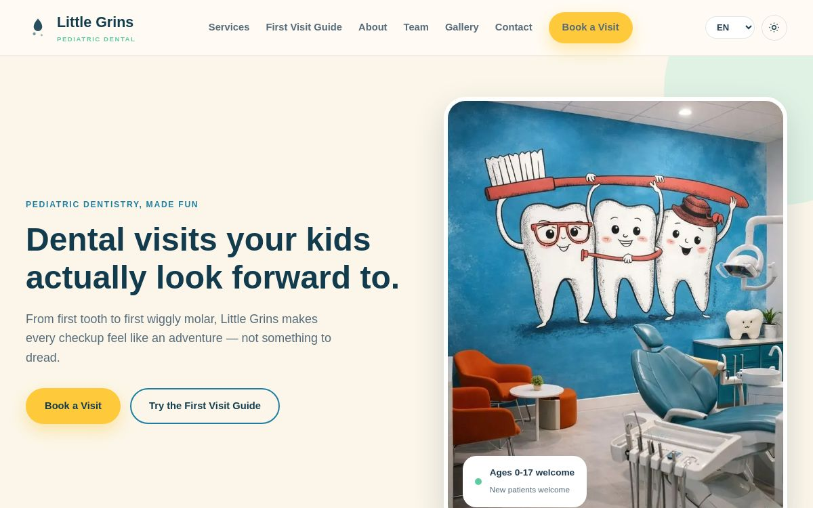
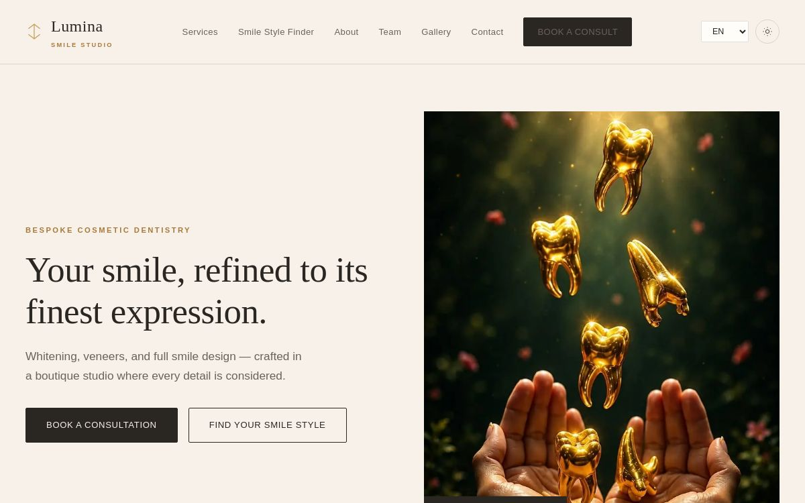
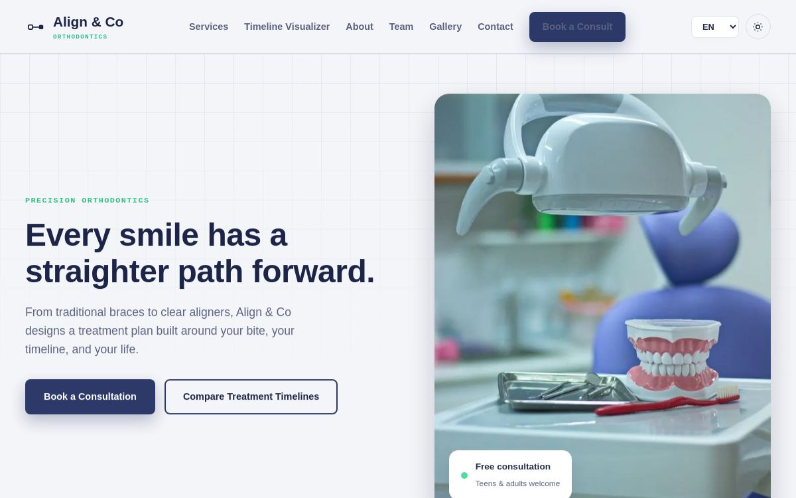

Theme ready
Meridian Family Medicine
A welcoming family-medicine template for wellness visits, prevention, same-day support and ongoing care.
Open live theme↗A focused showcase of five distinct, multipurpose healthcare templates—built for clarity, warmth and confident deployment.
Every preview below is rendered from the actual template source. The collection is structured to welcome future releases without turning into one clinic brand.

A welcoming family-medicine template for wellness visits, prevention, same-day support and ongoing care.
Open live theme↗
A warm dental-clinic template designed around trust, prevention and frictionless appointment conversion.
Open live theme↗
A playful, parent-friendly template for children’s dental clinics and family-focused practices.
Open live theme↗
A refined cosmetic-dentistry template for premium treatments and consultation-led smile studios.
Open live theme↗
A precise orthodontic template for braces, clear aligners, treatment planning and consultation conversion.
Open live theme↗The showcase follows the Senthan & Co production system while keeping every theme visually independent.
Gateway: EN · ES · FR · DE · PT · AR · ZH · SW · Themes: EN · ES · FR · DE · PT · AR · ZH (SW scheduled)
System-aware by default with a manual preference control.
Portable single-file templates with zero external dependencies.
Fictional regional demo details, varied responsibly across releases.
Demonstration collection location: Nakasero, Kampala, Uganda.